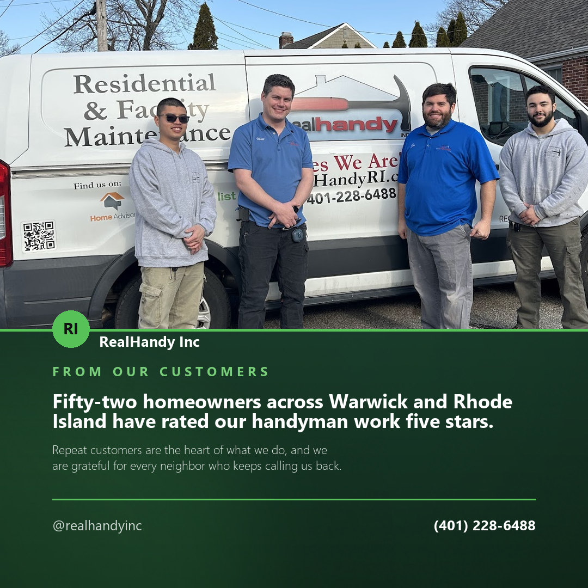
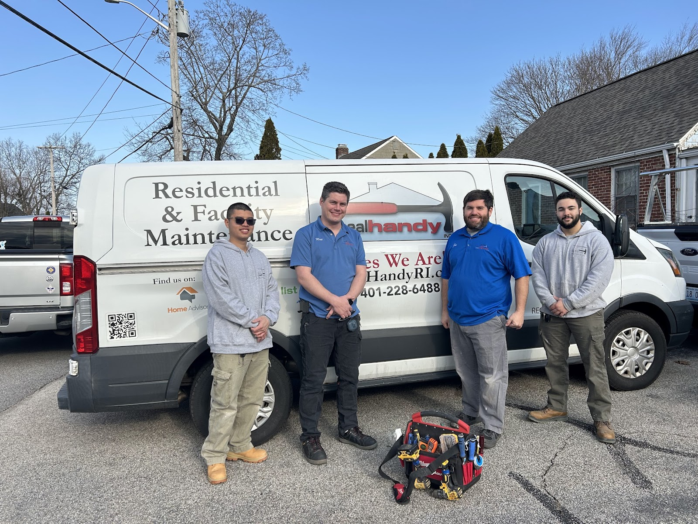
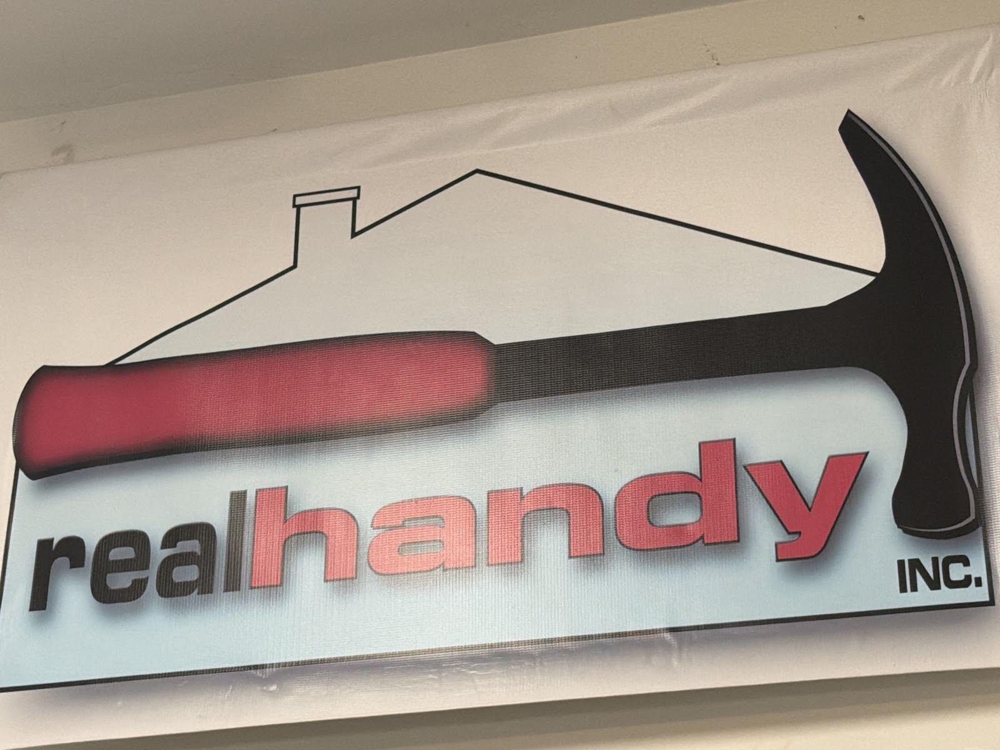
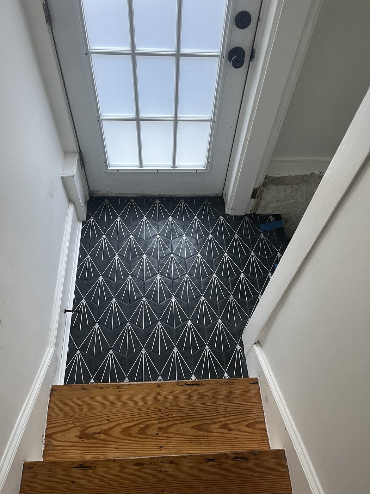
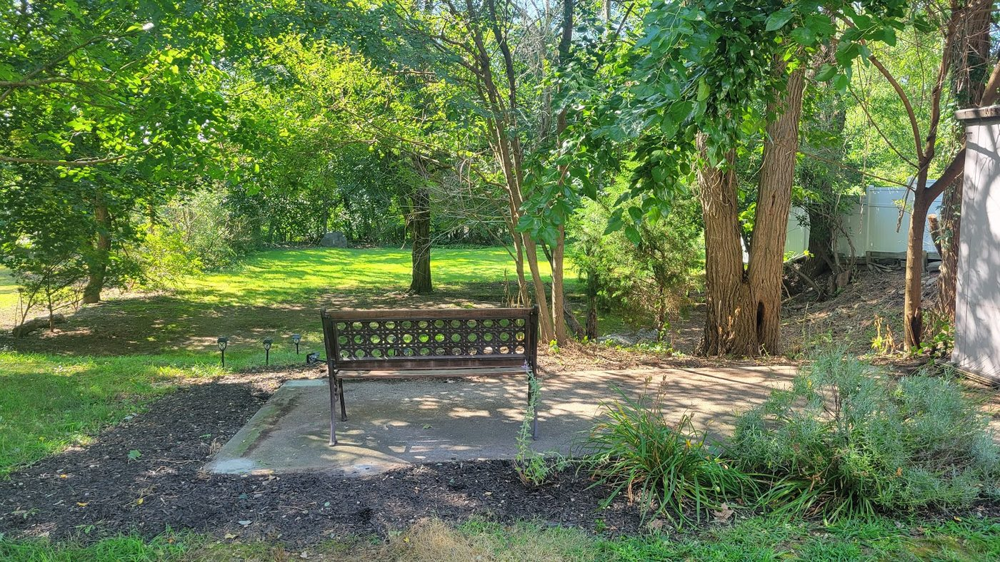

Customer trust · Facebook
Fifty-two homeowners across Warwick and Rhode Island have rated our handyman work five stars. Repeat customers are the heart of what we do, and we are grateful for every neighbor who keeps calling us back.
RealHandy Inc are, in their own words, “Your Handyman Specialists,” servicing Rhode Island & southern Mass out of Warwick. One call, one person, and the jobs that have been waiting since spring get crossed off.
Hiring a handyman is not really a question about skill. It is a question about whether somebody turns up on the day they said, does the thing properly, and charges what they quoted. That is not something a website can prove — it is something fifty-two customers already answered in public, and the average came out at five.
So rather than list a hundred services on your behalf, this page points at the record and at the phone number. Call and describe the list. That conversation will tell you more in two minutes than any amount of copy.




Go through the house first and write everything down — the door that sticks, the shelf that never went up, the thing you have stepped over since March. Then call once, instead of six times.
(401) 228-6488Content